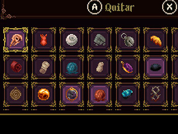

Hollow Knight
Metroidvania
Origenes
¿Que es un metroidvania?
El término Metroidvania fue acuñado por los fans y la comunidad de jugadores para referirse a los juegos que combinaban elementos de los juegos Metroid y Castelvania. Estos dos juegos, lanzados en la década de 1980, sentaron las bases para el género.
El primer juego de la serie Metroid fue lanzado en 1986 para la consola NES de Nintendo. Presentó un mundo interconectado y abierto, con áreas que inicialmente estaban bloqueadas y que se desbloqueaban a medida que el jugador obtenía nuevas habilidades y mejoras.
Samus Aran
Por otro lado, Castelvania es una serie de juegos de acción y aventura que comenzó en 1986. Aunque los primeros juegos de la serie no tenían un mundo interconectado como Metroid, Castlevania: Symphony of the Night lanzado en 1997 para la consola PlayStation, introdujo elementos de exploración no lineal y progresión basada en habilidades, similares a los juegos de Metroid.
Alucard
A medida que más juegos adoptaron estas características, los jugadores comenzaron a referirse a ellos como Metroidvania para describir el género en general. Desde entonces, el término se ha utilizado ampliamente para referirse a juegos que siguen este estilo de juego.
Características
¿Que debe tener un juego para ser parte del género?
Si bien no hay una lista fija de características que un juego deba tener para ser considerado un Metroidvania, hay ciertos elementos comunes que suelen estar presentes en este tipo de juegos:
- Mundo interconectado: Los juegos de Metroidvania suelen presentar un mundo abierto y conectado en el que los jugadores pueden explorar diferentes áreas. Estas áreas suelen estar interconectadas y se pueden acceder una vez se obtienen las habilidades o mejoras adecuadas.
- Progresión basada en habilidades: El progreso en un Metroidvania se basa en la obtención de nuevas habilidades o mejoras que permiten al jugador acceder a áreas previamente inaccesibles. Estas habilidades pueden incluir saltos más altos, habilidades de combate mejoradas o la capacidad de atravesar obstáculos específicos
- Exploración no lineal: La exploración es un elemento clave en los Metroidvania. Los jugadores tienen la libertad de decidir qué áreas explorar y en qué orden. A menudo, encontrarán caminos bloqueados o secretos que requerirán el uso de habilidades adicionales para acceder a ellos
- Mejoras y objetos: A medida que el jugador explora y derrota enemigos, se le recompensa con mejoras y objetos que mejoran las habilidades o la salud del personaje principal. Estas mejoras ayudan a enfrentar desafíos más difíciles y desbloquear nuevas áreas 
- Jefes desafiantes: Los Metroidvania suelen incluir encuentros con jefes difíciles que requieren habilidad y estrategia para ser derrotados. Estos jefes suelen proteger áreas clave o recompensas valiosas
- Retroceso: En muchos Metroidvania, si el jugador muere, puede haber cierto retroceso, como perder parte del progreso o tener que regresar a un punto de control anterior. Esto añade un elemento de desafío y recompensa la habilidad del jugador


Reconocimiento
¿Como llega Hollow Knight a ser un clásico moderno?
Hollow Knight es el resultado de la travesía realizada por un grupo de tres desarrolladores, un juego completo de detalles cuidados con el mimo más extremo, pero con crueldad y misticismo en su interior.
Aunque fueron Metroid y Castlevania quienes sentaron las bases del género, Team Cherry consigue exprimir lo mejor de los antiguos e implementar factores jamás antes vistos. La calidez que transmite la luz, la efusividad que cuenta la banda sonora cuando entramos en la zona del jefe o la situación de los personajes en la historia crea un vínculo realmente fuerte entre la obra y quien la está disfrutando.
El juego se centra en la importancia del alma y su fuerza, del alcance que puede llegar a tener la corrupción y la oscuridad y en una introspección latente del protagonista.
Si algo hay que colocar por encima del resto en Hollow Knight, es la manera en la que transmite sentimientos a quien tiene el mando en las manos. Más allá de que se haya querido representar algo similar al mito de la caverna de Platón a la inversa, el cúmulo de sensaciones atado a las mecánicas del juego son capaces de decir que esto es algo más que números en una pantalla.
Además de poseer una historia realmente compleja y trabajada, de nada serviría esto si el videojuego no poseyera unos escenarios tan trabajados y un diseño de niveles tan característico. Conseguir una habilidad, recorrer partes del mapa antes ocultas y continuar con la historia principal adquiriendo cada vez más poder es el combustible de este género, y Hollow Knight lo lleva a nuestros ordenadores sin apenas fallo alguno.